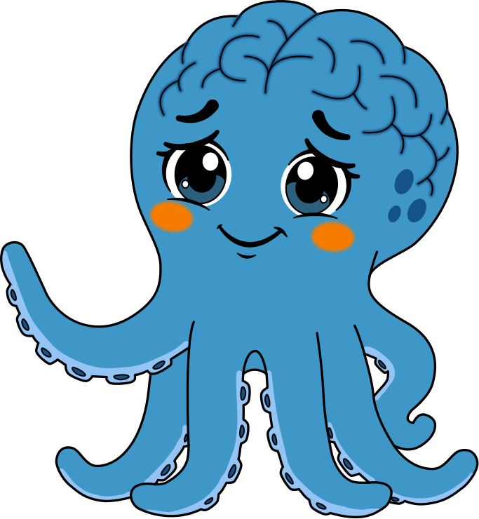

Misión
Entrenar las funciones ejecutivas del cerebro humano a lo largo de toda la vida, usando metodología científica, contenidos relevantes para el mundo real y tecnología escalable.

Sobre nosotrosCCA — El Gimnasio del Cerebro nace de una idea simple: las funciones ejecutivas se pueden entrenar durante toda la vida, con metodología científica y contenidos que de verdad importan.
Entrenar las funciones ejecutivas del cerebro humano a lo largo de toda la vida, usando metodología científica, contenidos relevantes para el mundo real y tecnología escalable.
Ser una red de centros de entrenamiento cognitivo en Colombia, operando bajo una misma plataforma y un mismo estándar de calidad.
Cada decisión de diseño de sesión está fundamentada en literatura científica revisada por pares, no en tendencias o intuición pedagógica.
Estas son algunas de las referencias que fundamentan el diseño de nuestras sesiones. Con gusto compartimos la bibliografía completa a quien la solicite.
En Rionegro, Antioquia, diseñamos el espacio físico de CCA para que comunique entrenamiento antes de que nadie diga una palabra: zonas de entrenamiento y de exploración claramente identificadas, materiales organizados por área de desarrollo, y un ambiente pensado para el movimiento, no solo para sentarse a escuchar.
Ahí recibimos a niños desde los 0 años, acompañamos a colegios en la formación de sus docentes, entrenamos a adultos de 18 a 50 años que quieren aprender inglés en la Fase Experta, y facilitamos las sesiones del Programa Adulto Vital para mayores de 65 años.
Escríbenos y agendamos una visita a la sede en Rionegro, o una conversación por WhatsApp si estás lejos.
Escríbenos por WhatsApp